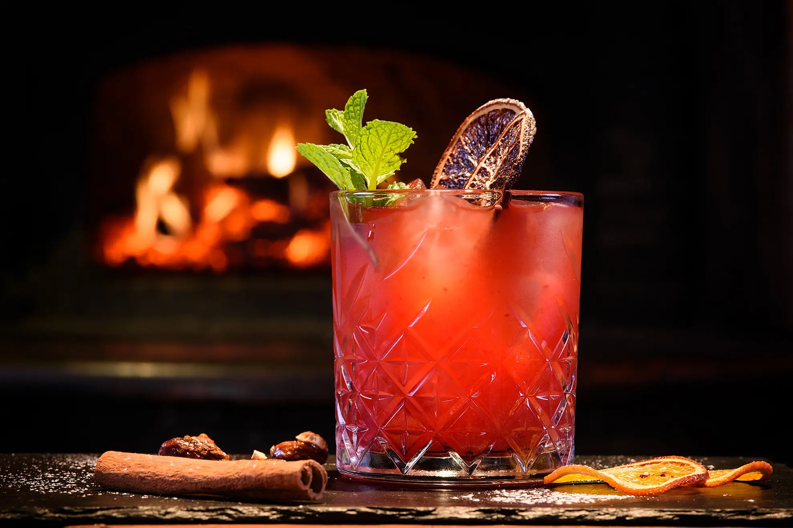

About Our Cocktails
We craft cocktails that blend classic recipes with original ideas, using fresh fruits, high-quality syrups, and premium spirits.
- Quality: Only the best ingredients and time-tested recipes.
- Uniqueness: Signature cocktails with options for customization.
- Personalized Service: We can customize any cocktail to suit your preferences or craft something entirely unique just for you.
- Variety: Alcoholic and non-alcoholic options to suit every taste.

cocktails menu